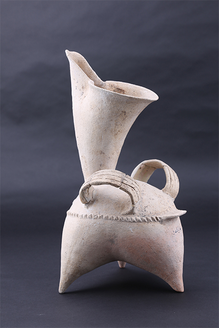
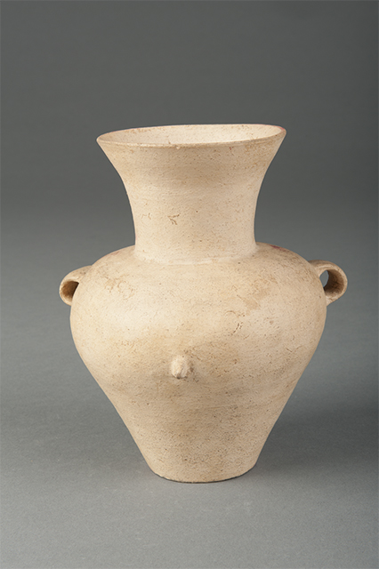

大汶口文化是距今6100-4600年，分布在黄河下游的山东、苏北、皖北、豫东等区域的一支新石器时代晚期考古学文化。因1959年泰安大汶口墓地的发掘而得名。
已发掘的重要遗址有泰安大汶口、曲阜西夏侯、邹县野店、兖州王因、枣庄建新、茌平尚庄、广饶五村、胶州三里河、诸城呈子、长岛北庄、莒县陵阳河、日照东海峪、邳县刘林、新沂花厅、蒙城尉迟寺等。发现的遗迹主要有灰坑、房址、夯土台基、城址、墓葬、陶窑等。目前已发现大汶口文化房屋约几百座，房屋平面呈圆形、圆角方形、长方形等，为半地穴或浅地穴式，面积不大，一般10余平方米，小者3-4平方米，大者近30平方米。墓葬为长方形土坑竖穴墓，盛行仰身直肢葬，部分儿童采用瓮棺葬。单人一次葬为主，也有一部分两人或多人合葬墓。成人中普遍存在拔除侧门齿，头骨枕骨变形，口含小球，齿弓变形，死者手握獐牙或獐牙勾形器等习俗，并有随葬猪头或猪下颌骨的现象。到大汶口文化中晚期，墓葬规模、随葬品数量和质量的差异明显，表明这一时期社会贫富分化开始出现并逐渐加剧，如大汶口遗址M2019随葬品多达96件，另有獐牙、猪下颌骨等，而同一时期的另一组墓葬则有极少随葬品，甚至没有；新沂花厅墓地还发现殉人现象。在莒县凌阳河和大朱村、诸城前寨、蒙城尉迟寺等遗址出土的大口尊上发现7种刻划的图像文字符号。在多个经过系统调查和发掘的大汶口文化遗址中，普遍发现了粟、黍、稻等农作物及相关植物遗存，加上大量农业生产工具和加工工具的发现，都显示出该时期农业规模的扩大和农业生产的进一步发展。大量猪骨或猪下颌骨以及猪形、狗形陶塑的发现，显示这一时期猪、狗等家畜饲养之普遍，猪下颌骨甚至被当作这一时期财富的象征。
陶器以手制和轮制相结合，有的器物部件采用模制法，大汶口文化晚期轮制技术得到逐步推广和普及，先进的快轮拉坯成型技术开始出现。器表以素面为主，主要纹饰有锥刺纹、附加堆纹、刻划纹、按压纹、方格纹、篮纹、瓦棱纹、镂空等。早期以红陶为主，晚期黑皮陶和黑陶占比最高。常见器形有（罐形、钵形、釜形）罐、觚形杯、豆、陶鬶、盉、背壶、高柄杯、罐、钵、壶、盆、瓶、筒形杯、匜、甗、甑、器盖、器座、漏器等，其中陶鬶、背壶、高柄杯等是大汶口文化的标志性器物。以彩陶和白陶最具特色，海岱地区的彩陶受中原仰韶文化的影响而产生，始自北辛文化时期，在大汶口文化时期发展到了顶峰，主要器形有钵、鼎、壶、豆、背壶、盉、杯、盆、罐、觚形杯等，色彩有黑、白、红、褐、赭、黄等，花纹图案母题以植物和几何纹为主，其中以折线纹、花瓣纹、勾连回旋纹最具特色。八角星纹彩陶豆、花瓣纹彩陶鼓、云雷纹彩陶盒等都是典型代表。大汶口文化晚期，开始出现采用高岭土为原料制作和烧制的白陶，器形涵盖陶器的大部分器类，尤以白陶鬶、背壶、高柄杯为常见，陶色呈白色或橙黄色等。
玉、石器加工技术在该时期逐渐精致化，从琢制为主，局部磨制，到器表通体磨制，有的还采用了抛光工艺，并出现了管钻穿孔技法，器形更加规整。石器类有斧、钺、铲、凿、锛、有段石锛、刀、镰、镞等。玉器类主要有玉坠饰、连环玉饰、玉铲、玉钺、玉琮、玉璧、玉璇玑等。骨、角、牙器的磨制、穿孔、雕刻等制作技术在大汶口文化时期得到飞速发展，工艺达到了较高的水平。有骨锥、针、柶、矛、镞、鱼鳔、鹿角靴形器等，其中束发器、骨雕筒、象牙雕筒、镂空象牙梳、象牙琮、獐牙勾形器等是这一时期高超手工业制作的代表。